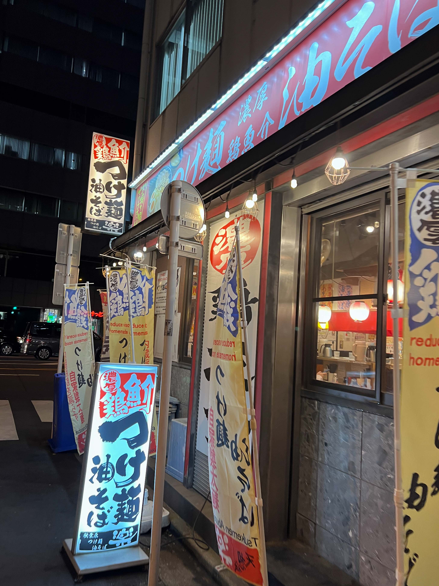
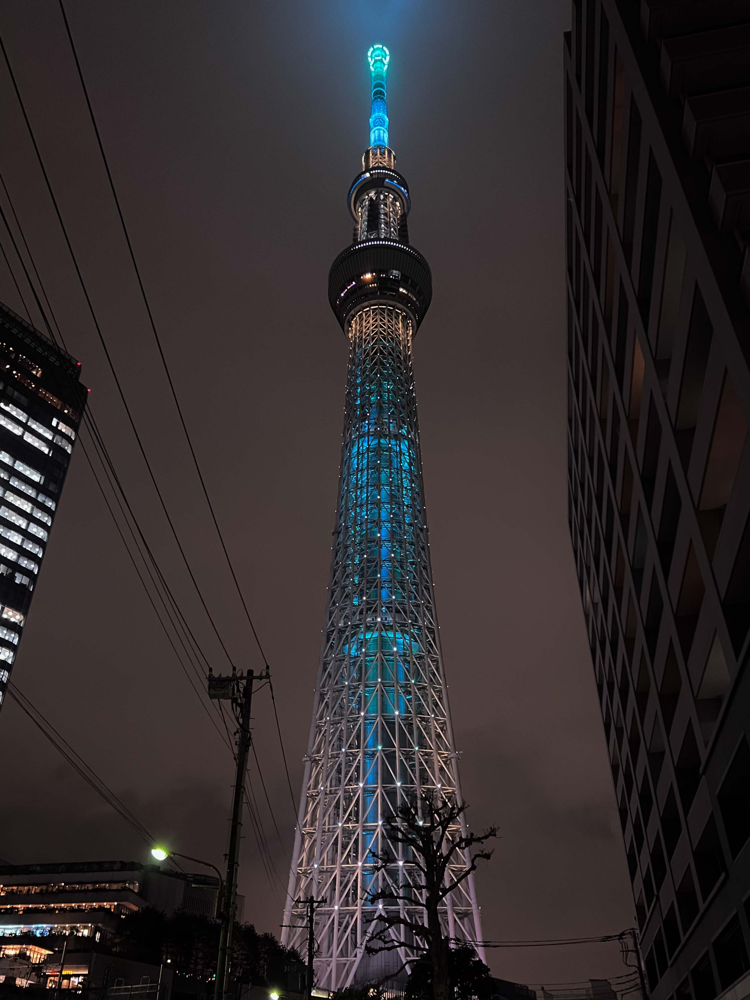
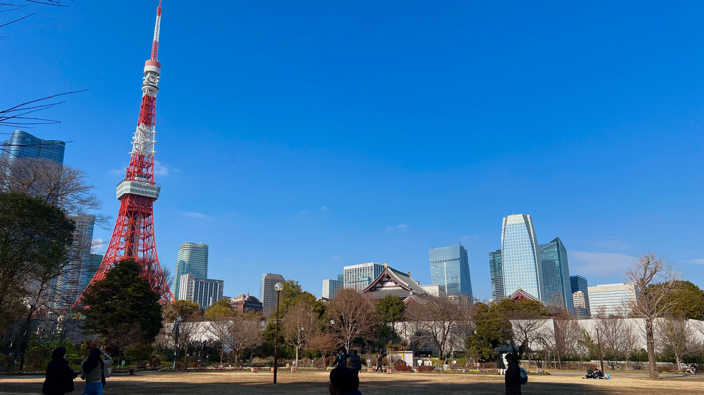
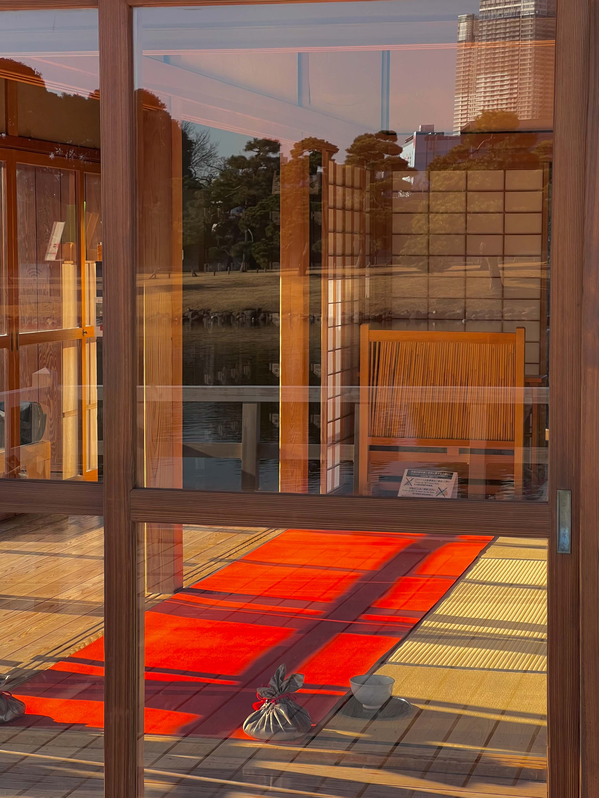

25년 01월 20일 - 26일 7일간
아이폰으로만 약 1500장의 사진을 남겼고 7일간 156,539보 126.1km를 걸었습니다.
오태경 본인을 포함해 남자 3명 이서 출발하였고 3명 다 무계획형 인간 들로 날짜별로 한 지역을 거점 삼아 막 돌아다녀 보았습니다.

비행기는 오전 7시에 출발 하는걸로 이른 시간에 출발하였고 모두 새벽같이 공항으로 모여 출발하였고
해가 뜬 뒤 구름 위는 비현실적인 풍경이었습니다.
나리타 공항에 도착해 갈때 쯤 허리를 숙여 멀리 보면 후지산이 보이지 않을까 하는 생각에 허리를 숙여 봤더니,,
출국 게이트로 이동하면서 마리오와 루이지가 반겨주었고 일본에 도착해서 가장 처음으로 본 광고는 아사히 슈퍼드라이가 되었습니다.
게이트에서 나와 처음으로 한 것은 먼저 세븐일레븐과 제휴되있는 ATM을 찾아 1만 엔을 뽑았습니다.
토스뱅크 체크카드가 있으시다면 토스 앱 내에서 환전이 가능하고 아무 수수료 없이 환전해 놓은 금액을 ATM에서 천엔 단위로 뽑을 수 있기 때문에 3명다 이 서비스를 애용했습니다.
나리타 공항에서 도쿄 시내까지 가는 선택지는 꽤 여러 개가 있고 가장 대표적인 것은 JR 동일본이 운영하는 N' EX와 같은 고속열차를 이용하는 것이 보편적인데 가격이 꽤 나가기에
공항 내 발권하는 곳 근처에 한국어로 저비용 버스라고 돼 있는 고속버스와 같은 것을 타고 이동했습니다.

비행기에서 실컷 잤기에 약 1시간이 조금 넘는 이동시간 동안 풍경과 지나가는 차종들을 하나씩 보았습니다.
일본은 인터넷에서 보았던 것보다 훨씬 더 레이와 같은 박스형 차가 많았고 한국보다는 높은 비중이지만 정말 가끔 클래식 카를 볼 수 있었습니다.
도쿄역에 도착하고 나서는 정말로 뭔가 일본에 도착했다는 느낌이 들었고…. 그리고 정말 막막했습니다.
도쿄역을 서울역 보다 복잡했고 일정에는 도쿄역에 도착해서 일본교통 카드를 만들자고만 막연하게 적어 놨었고 교통카드 발급처를 찾기까지 도쿄역에서 10분가량 헤맸습니다.
신카이 마코토 작품에 간간히 연출되는 도쿄에 올라와서 해메는 주인공들의 심정을 조금은 이해할 수 있었습니다.일본의 지하철과 철도 시스템은 대한민국과 유사한 점이 많아 이용 자체는 어렵지 않게 할 수 있습니다.
교통카드 스이카를 발급하고 아이폰으로 옮겨주었습니다.
아이폰으로 한번만 옮겨 주기만 하면 별도의 조작 없이 태그에 가져다가 대는것 만으로 교통카드를 이용할 수 있고 현대카드 같이 한국 결제 수단이 애플페이에 등록되있다면 편의점 가서 충전을 하지 않아도 카드 결제로 충전을 할 수 있었습니다.
한국이 티머니, 이즐과 비슷하게 교통카드 기능 이외에도 편의점에서 대부분 사용이 가능하고 카드 결제를 지원하는 식당이라면 대부분 스이카도 지원했으며 물품 보관함도 스이카를 지원하여 일본 여행에서는 거의 필수라고 보여집니다.

새벽같이 출발하여 도착해서 물 외에 어떤것도 입에 가져다 대지 않았기에 역 밖으로 나와서 구글지도에 규동을 검색하고 가장 가까운 곳으로 찾아갔습니다.
도쿄역 근처도 서울역 근처와 같이 여러 기업체가 모여져 있었고 딱 점심시간이었기 때문에 규동집 안에는 점심식사하러 나온 직장인들로 가득 차 있었습니다.
다행히도 태블릿으로 주문하는 시스템이 있었고 한국어 또한 지원해서 뭔지 모르고 시키는 일은 없었습니다.
점심 할인으로 50엔정도 할인이 된 가격으로 규동 세트를 한국돈 6천원도 안되는 가격으로 먹을수 있었습니다.
여담으로 가게 내부가 좁아 일행과 떨어져 바테이블에 앉아서 혼자 먹었었는데 앉자마자 직장인 분들이 뭐지 하는 표정으로 저를 바라보았던게 아직도 생각납니다. 무슨 생각들을 하셨을까요그 이후 아사쿠사에 있는 에어비엔비로 이동하여 캐리어를 놔두었습니다.
일본은 정말로 길거리에 자판기가 엄청 많았고 숙소 근처에도 자판기가 있었습니다.
모든 음료를 100엔에 파는 자판기가 모여있는곳이 있었고 코카콜라 500ml를 천원도 안주고 마실수 있었습니다...
이 이후로 여러가지 서브컬쳐와 쇼핑몰이 엄청나게 모여있는 아키하바라로 이동했습니다
서브컬쳐 상품은 말도 할 것 없이 엄청 많았고 한국 오프라인 매장에서 보기 힘든 카메라와 여러 장비들, 굿즈들을 볼 수 있었습니다.
이후 저녁에는 여행 전 서치해놓은 츠케멘집을 갔고 처음 먹어보는 형태의 일식 이었지만 정말 맛있게 먹고 나왔습니다.

350m의 높이로 도쿄의 야경을 볼 수 있었습니다.
핸드폰만 가져갔던 터라 사진으로 완벽이 못담는게 너무 아쉬웠지만 두눈으로 본 광경은 엄청났습니다.
한국에 비해 산이 없어 더욱더 넓게 펼쳐져 있는 도시의 모습이 정말 비현실적으로 와닿았습니다.
바닥이 유리로 돼 있는 부분이 있어 그위에도 한번 서봤습니다.
숙소로 돌아가기전에는 편의점을 털었고 여러가지 일본 컵라멘과 일본에만 있는 클리어 아사히를 마셔봤습니다.
개인적으로 캔째로 마시는 맥주중에서는 가장 괜찮았습니다.
2일차는 도쿄 시내와 하마리큐 은사정원 도쿄타워등을 둘러 봤습니다.
도쿄의 구청은 외부인들이 와서 식사를 할 수 있도록 직원 식당을 개방해 놓아 들어가서 구청밥을 먹을 수 있었습니다.
급식실과 같은 구조 였고 카레 4천원 면 3천원으로 엄청나게 합리적인 가격과 말도 안되는 뷰를 보면서 식사를 할 수 있었습니다.
편의점에 들려서 웰치스 맛이 나는 몬스터도 마시고 도쿄타워 근처로 이동했습니다.
영화 '날씨의 아이'에 나온 스팟에서 사진을 찍어보기도 했습니다.
그뒤로 택시를 타고 근방에 있는 하마리큐 은사정원으로 향했습니다.

도심에 둘러싸여져있는 녹지 공간으로 1월에도 불구하고 간간히 꽃이 피어져 있었습니다.
물에 떠있는 나카지마노 오차야라는 찻집에 잠시 들러 전통 방식으로 내려진 말차 또한 마셔보았습니다.
맛은.. 차는 잘 안마셔봐서 모르겠지만 정말 정말 건강한 맛이었습니다.
이후에는 긴자에 들러 여행용 로션같은걸 구매했고 신기하게도 무인양품에서 파는 신선식품 또한 볼 수 있었습니다.
그 다음날 3일차에는 봇치더록에 나오는 지역으로 유명하고 약간 한국의 홍대 포지션이라고 볼 수 있는 시모키타자와와 약간 송도 포지션이라고 할 수 있는 오다이바를 배를타고 들어가보고 일행 중 한명이 가자고 했던 건담베이스를 또한 가봤습니다.
아침은 숙소 근처에서 해결하고 여행 내내 거의 보지 못하였던 길고양이또한 보았습니다.
이후 지상철을 통해 시모키타자와로 향했습니다.
애니메이션에 나왔던 장소라 여러 외국인 관광객들을 볼 수 있었고 홍대 포지션이라 힙한 패션을 가지신 분들과 편집샵들 그리고 아기자기한 소품샵 까지 많이 둘러볼수 있었습니다.
지나가다가 들린 상점에서는 좋아하는 밴드 기타리스트가 나온 특집호 잡지 또한 구매할 수 있었습니다.
3일차가 되서야 진정한 일본 라멘을 먹을 수 있었으나 오로지 식권 자판기에 있는 사진으로만 보고 시켰어야 했기에 도전을 한번 해봤습니다.
자판기에 써져있는 폰트가 꼬부랑이라 번역기도 인식이 되지 않아 아직도 저는 이날 제가 무슨 라멘을 먹었는지 잘 모릅니다.

아사쿠사에 인접해있는 스미다강을 따라 쭉 30분 정도를 타고 가며 도심의 풍경을 볼 수 있습니다.
오다이바에 접근하는 방법은 차도 외 모노레일과 배를 타는것이 있는데 꼭 한번 경험해보심 좋겠습니다.
오다이바는 송도와 비슷한 포지션으로 대형 쇼핑몰이 두개 있고 바다를 향하는 여러 전망과 해변이 있습니다.
진짜 프랑스가 만들어서 줬다는 자유의 여신상 미니버전도 볼수 있었고 1:1 사이즈의 대형 건담도 볼 수 있습니다.
쇼핑몰 내 푸드코드에서 일본에 있는 미국 햄버거 체인은 어떤 느낌일까 하고 웬디스를 주문해서 먹어봤는데
아마 도쿄 여행 내에서 가장 후회하는 1끼가 아니였나.. 싶구요
자고있는 멍멍이도 보고 좋아쓰 하는 그 냥이 가챠도 돌려보고 좋아하는 밴드의 앨범 CD 또한 봤습니다.
생 펩시 콜라도 마셔봤는데 탄산이 조금더 강하고 약간 단 맛이 덜한 느낌이었습니다.
오다이바는 일행중 한명이 건담베이스에 들리고 싶다고 해서 갔었는데
마감 시간 3시간 전에 도착했었는데 엄청난 인기로 당일 예약이 다 찼다고 해서 결국엔 못보고 돌아왔습니다.
그렇게 다리위를 달리는 모노레일을 타고 아사쿠사 숙소 근처에 있는 센소지를 한번 둘러 보았습니다.
늘 그렇듯 관광지에 있는 이런 분위기를 풍기는 곳에는 운세를 보는 가챠가 있었고
저를 제외한 두 일행은 각자의 운세를 하나씩 뽑고 확인했습니다.
의외로 마감되어 건담베이스를 보고 싶었지만 못 보았던 그 친구의 운세는 좋았고
운세를 뽑은 다음날 기타샵에서 원하는 기타를 엄청나게 친절한 사장님에게 싸게 구매한 친구의 운세는 구제불능에 가까운 안좋은 운세를 뽑았었습니다.
인생참 살고 볼 일 같습니다.
(안좋은 운세 본문)
그다음날 4일차는 신주쿠 부근으로 숙소를 옮겨야 했고
저와 일행 한명은 일본에 왔던 근본적인 목표인 기타를 구매하러 오차노미즈라고 하는 기타숍이 모인 지역으로 바리바리 싸들고 출발합니다.
그리고 결국 건담베이스를 구경하지 못한 친구는 다시한번 건담을 구매하러 오다이바로 출발 하였습니다.
앞서 말했듯 같이 오차노미즈로 갔던 일행은 저렴한 가격에 양질의 기타를 구매하였고 원래 저 또한 기타를 사러 일본에 갔었는데
이러 저러한 이유로 결국 구매하지 못하게 됩니다.
아직도 후회됩니다.
이후로 여행 4일차쯤 다들 몸도 마음도 피곤할테니 저녁에 토시마엔 나와노유라는 온천을 즐겼습니다.
물이 특이하게도 엄청 엄청 짰었습니다. 내부에는 한국의 찜질방 같이 찜질을 할 수 있는 곳도 있고 앉아서 잡지를 읽거나 잘수 있는 수면실또한 구비가 되어있어 저녁 늦게까지 수면실에서 잤었습니다.
5일차에는 그 유명하다는 신주쿠와 시부야를 보고 가부키초 또한 보게 됩니다.
오른쪽 아래에 밴드 새소년의 보컬 '황소윤'님이 보입니다.세상에 몇없는 펜더 플래그십에 들러 피크와 기타 여러개를 시연해보았습니다.
점심으로 스테이크집에도 가보았고 엄청나게 큰 메가돈키호테 또한 가보고 사진으로 안찍었지만 그 유명하다던 스크램블 교차로또한 걸어봤습니다.
밤에는 환락가로 유명한 가부키초에 가봤습니다.
말로만 듣던 호스트바 또한 보고 메이드복을 입고 계시는 분들 외국인이 많은 아기자기한 바가 많은 거리또한 가봤습니다.
갑자기 비가 쏟아졌고 우산이 없었지만 그래도 즐거웠었습니다.
여러모로 부평의 엄청난 상위호환이라는 생각이 가끔 머리에 스쳐지나기도 했습니다.
비가 쏟아져 옛 도요타 크라운 택시를 타봤었습니다.
승차감이 진짜 매우 좋았습니다.
6일차에는 일행들마다 각각 각자 행동에 나섰습니다.
기타를 샀었던 친구는 후지산을 보러 갔고
건담을 샀었던 친구는 하루 종일 숙소에 있었다고 했습니다.
오태경은 그전에 갔던 스팟들인 신주쿠 시모키타자와 시부야를 한번씩 들리며 천천히 기념품과 사갈것들을 챙겼습니다.
숙소 근처에 한인타운이 있었습니다.
묘하게 귀여운 고양이 티셔츠, 한화로 천만원이 넘어가는 카메라, 한국에는 들어오지 않을것 같은 구글의 핸드폰 여러 관심사 내에 있는것들을 최대한 눈에 담으려 애썼고 그날 저녁쯤에는 3만보가 넘어 갔습니다.
저녁에는 묘하게 가부키초에 한번더 들리고 싶어서 들렸었습니다.
저녁 숙소에서는 매일 편의점에서 주류를 사서 먹었었는데 가장 최악인건 잭다니엘 넘버7 코카콜라 였습니다.
한모금 한모금 마실때마다 넘기기 힘들어서 코로 숨을 안쉬면서 먹었던 기억이 있습니다.
번외로 스트롱제로 라고 하는 레몬맛이 나는 9도 짜리 술이 있는데
안주를 적게 먹어도 술을 꿀떡 꿀떡 넘겨도 몸이 안상하게 취할 수 있었습니다.
스트롱제로는 소주와 같은 포지션으로 쉽게 취할수 있어 일본 내에서는 사회문제라고 합니다.7일차에는 모두와 함께 쇼핑몰을 돌아다니며 기념품을 구입 하였고 도쿄역으로 다시가서 저가 버스를 타고 다시 나리타 공항으로 향했었습니다.
거진 일주일이나 되는 일정이었기에 크나큰 버스에 타면서 큰 아쉬움은 없었습니다.
마지막으로 나리타 공항에서 먹었던 라멘인데 이게 일본 내에서 먹은 라멘 중 가장 비쌌고 한국 식당에서 시키면 나오는 라멘과 비슷한 느낌이었습니다.
여행 내내 비행기, 숙박비를 이만큼 내고 뽕뽑으면 안되지 않을까 하는 마음과 뽕을 뽑으려 하면 여행을 못즐길꺼야 하는 마음이 대립했었고
각자 자유 행동을 하는 6일차에는 결국 뽕뽑아야 겠다는 마음이 앞서서 3만보 이상을 걸었긴 했습니다.
전체적으로 엄청 자세하게 계획을 하고 간 여행이 아니기 때문에 무언가 어디를 더 가봤으면 하는 것과 뭐 좀 더 사올껄 하는 그런 아쉬움 빼고는 만족했습니다.
도쿄는 전체적으로 봤을때 서울과 정말 비슷한 점이 많았습니다.
분명 도쿄와 서울은 오버랩되는 장면이 많았지만 사소한 디테일들 속에서 도쿄만의 매력을 느낄수 있었습니다.
무언가 다름, 해방감을 느끼고 싶어서 도쿄로 여행을 떠난다면 말리고 싶고
무언가 이면의 서울과 같은 느낌을 원하고 쇼핑을 좋아하신다면 도쿄 꼭 한번 가보심이 어떨까 합니다.